Imphal
Imphal, the capital, is known for its rich cultural heritage. Visit the Kangla Fort, the Manipur State Museum, and the historic war cemeteries.


 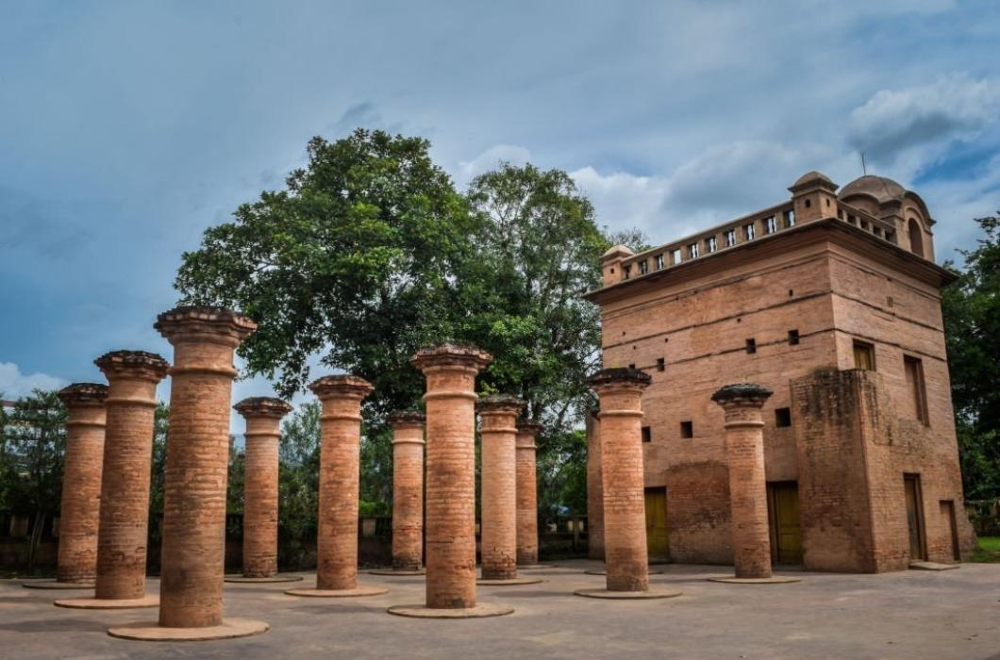
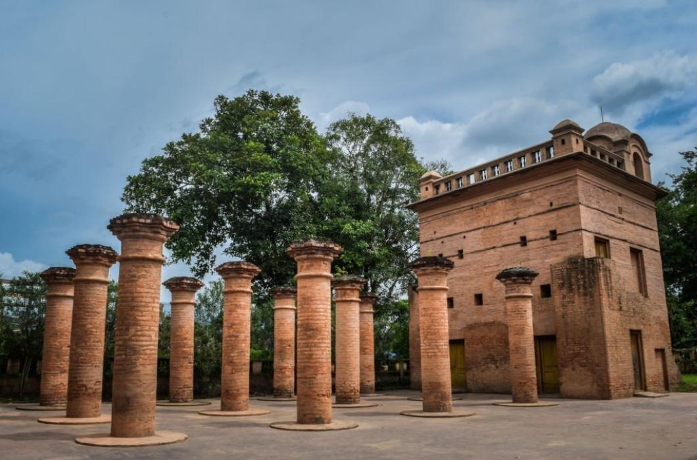
 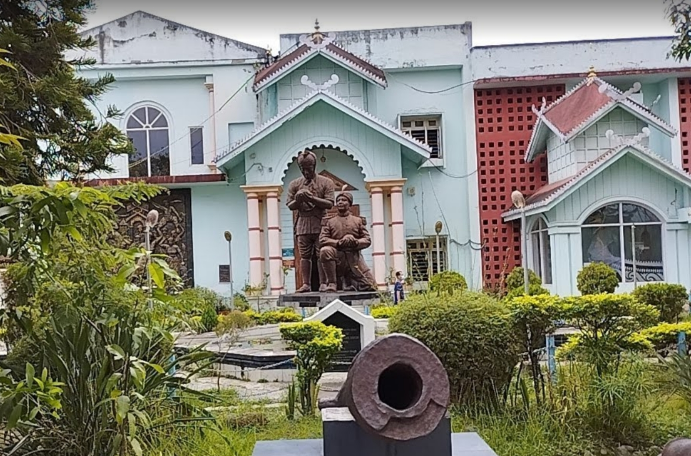
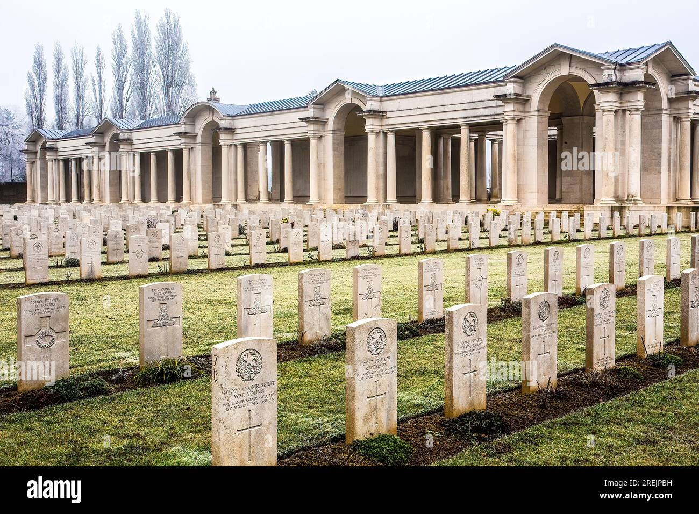
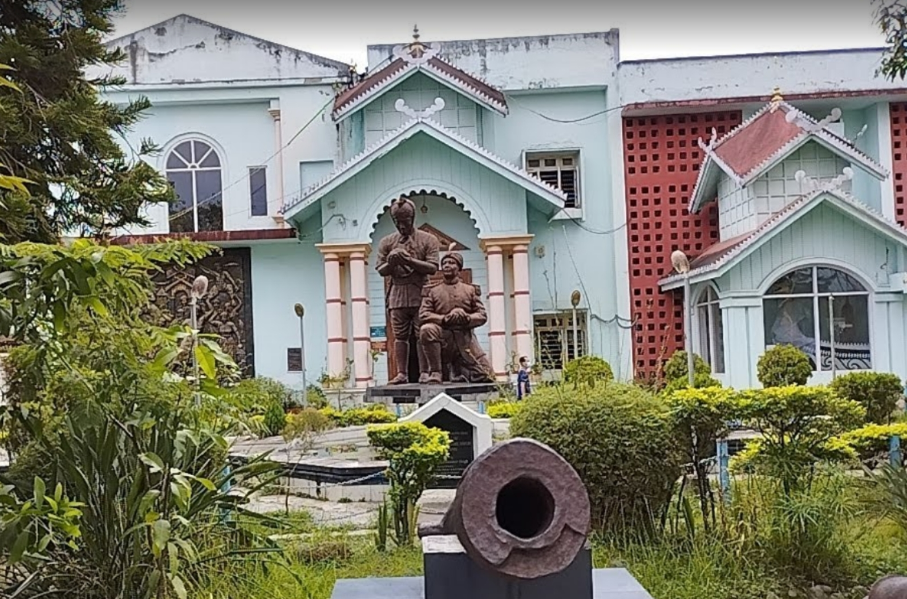
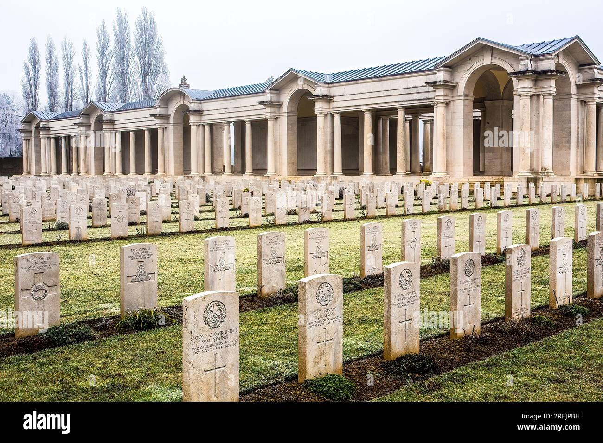
Imphal, the capital, is known for its rich cultural heritage. Visit the Kangla Fort, the Manipur State Museum, and the historic war cemeteries.
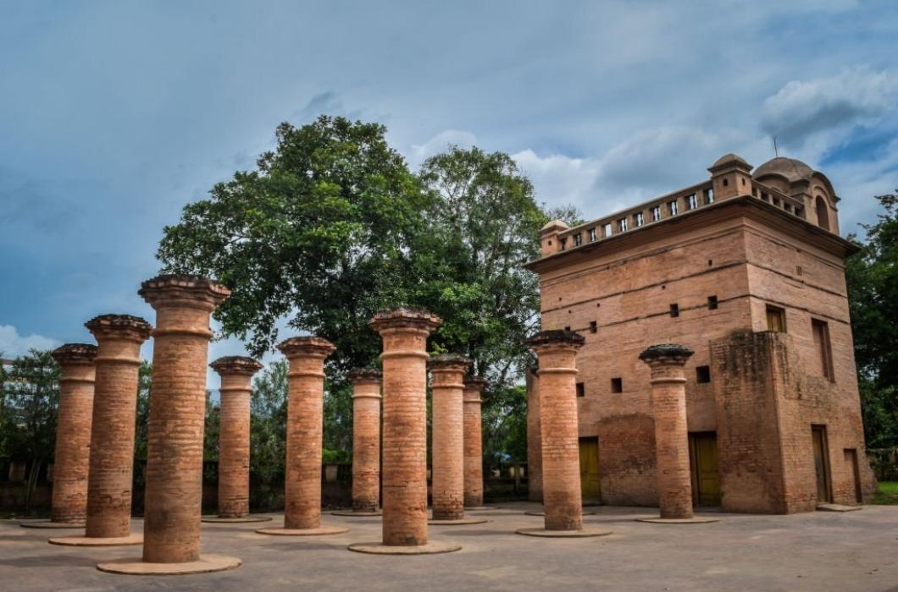
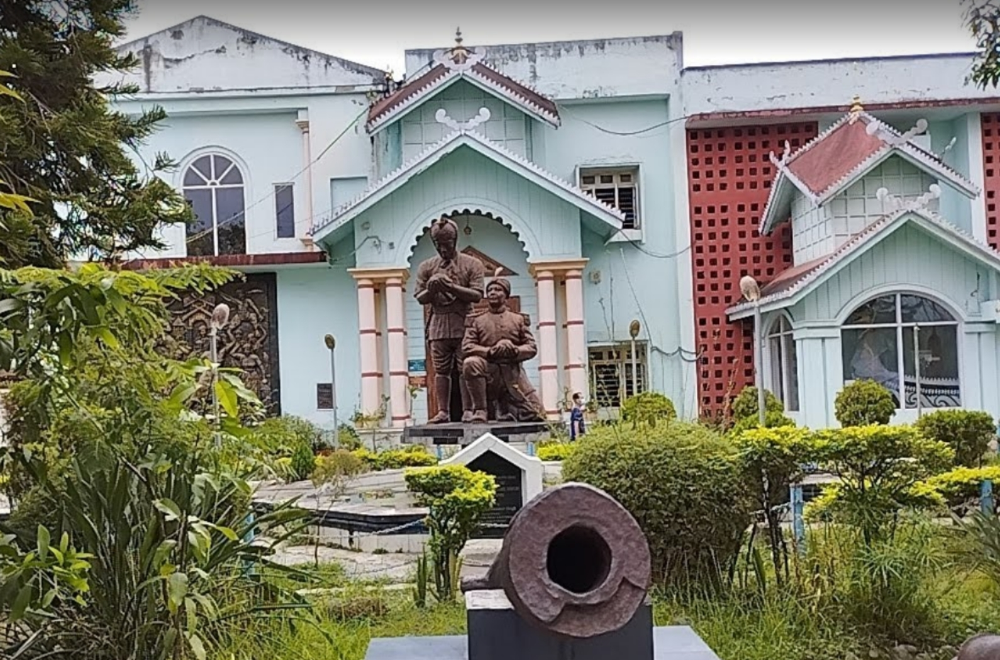
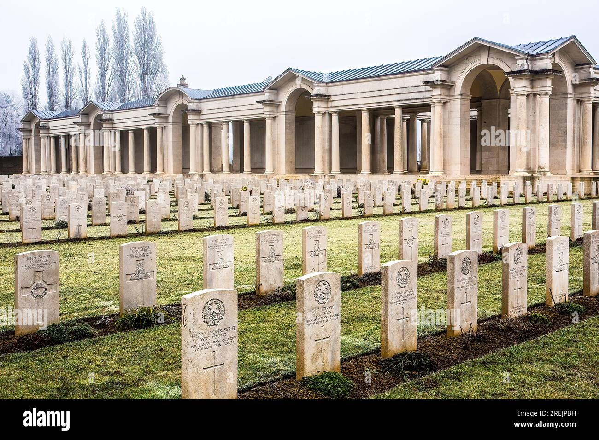
Loktak Lake is the largest freshwater lake in Northeast India. It is known for the floating phumdis (heterogeneous mass of vegetation, soil, and organic matter).
 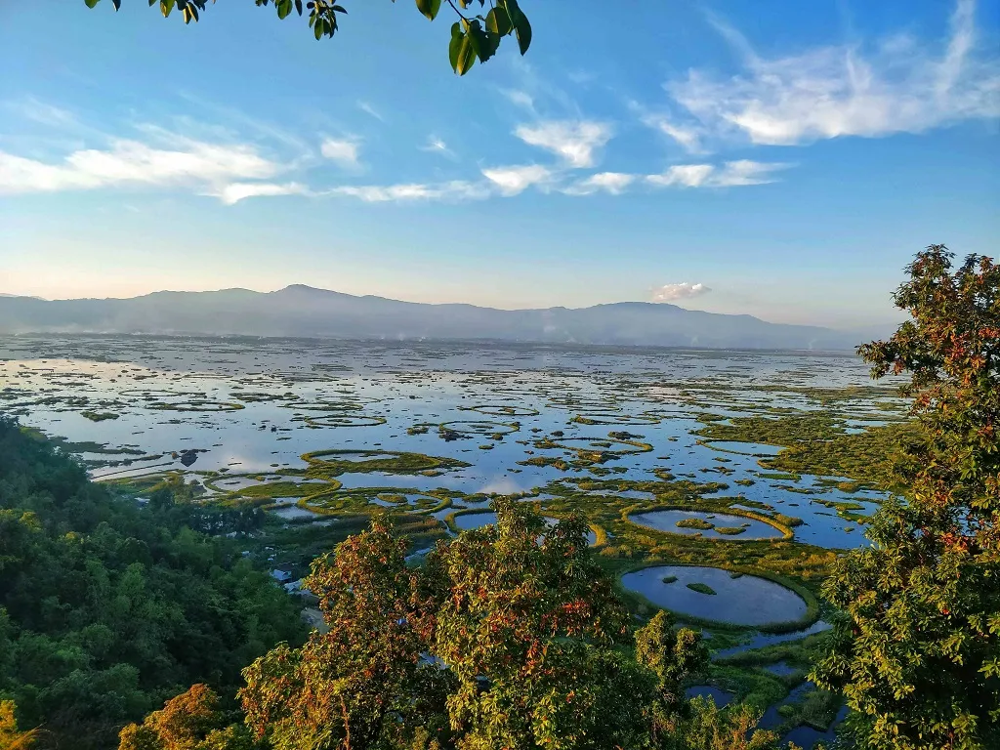
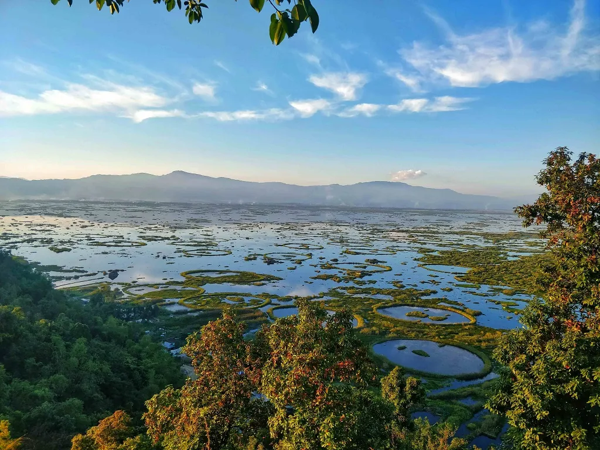
 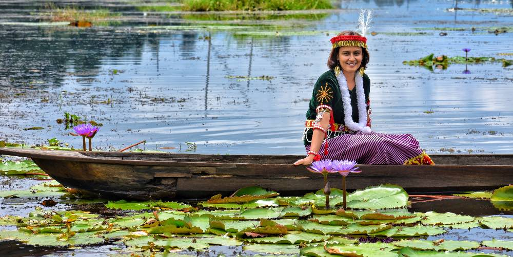
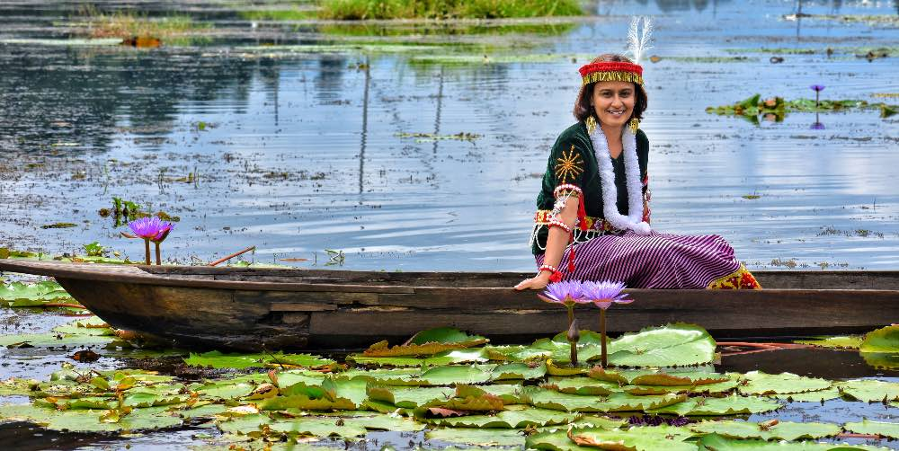
Kangla Fort holds great historical and cultural significance. It has been the seat of power for various rulers and is home to ancient temples and artifacts.